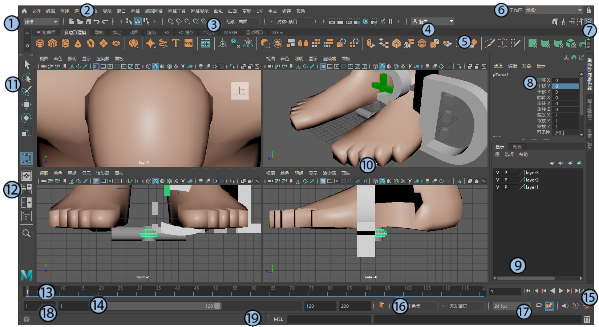

本部分简要概述了 Maya 主界面。以下编号的标题是指图中编号的界面元素。
- 如果找不到要查找的菜单，可能是未打开正确的菜单集。请参见菜单和菜单集。也可以选择，然后输入要查找的菜单或命令的名称。
- 可以使用“窗口 > UI 元素”(Windows > UI Elements)菜单在主窗口中显示或隐藏元素（面板）。
- 可以隐藏所有界面元素使查看空间最大化，并改用快速命令功能：热盒、 Maya 热键和标记菜单。
- 在双向箭头光标出现时拖动大多数面板的边，可以调整这些面板的大小。
- 通过将面板停靠到 Maya 窗口的不同区域，可以重新排列这些面板以满足个人喜好。有关详细信息，请参见停靠和取消停靠窗口和面板。
- 若要放大鼠标指针下的视图（例如，“视图面板”(View Panel)或“曲线图编辑器”(Graph Editor)），请按 Shift + 空格键。这将收拢停靠在主窗口中的所有其他窗格。如果鼠标指针悬停在界面的浮动窗口或其他部分（例如，“通道盒”(Channel Box)或“工具设置”(Tool Settings)）上方，则会影响您所单击的最后一个视图。再次按住 Shift + 空格键可还原之前查看的配置。
- 若要全屏显示光标聚焦的窗格，请按 Ctrl + 空格键。其工作方式与按住 Shift + 空格键以放大视图相同，但是还会隐藏“状态行”(Status Line)、“工具架”(Shelf)和“时间滑块”(Time Slider)等 UI 元素。再次按住 Ctrl + 空格键可还原之前查看的配置。

- 1.菜单集
- 菜单集将可用菜单分为不同的类别：“建模”(Modeling)、“绑定”(Rigging)、“动画”(Animation)、“FX”和“渲染”(Rendering)。Maya 主菜单中的前七个菜单始终可用，其余菜单根据所选的菜单集而变化。有关信息，请参见菜单和菜单集。
- 2.菜单
- 菜单包含在场景中工作所使用的工具和操作。主菜单位于 Maya 窗口的顶部。还有用于面板和选项窗口的单独菜单。还可以访问热盒主菜单中的菜单，通过在视图面板中按住空格键即可打开热盒。有关信息，请参见菜单和菜单集。
- 在“菜单集”(Menu Sets)和“菜单”(Menus)之间，在视口的角中是房屋的小图标 (
 )。这是应用程序主页(Application Home)图标，单击该图标可以查看最近的文件列表，还可以查找学习材料以及有关版本中新特性的信息。
)。这是应用程序主页(Application Home)图标，单击该图标可以查看最近的文件列表，还可以查找学习材料以及有关版本中新特性的信息。
- 3.状态行
- 状态行包含许多常用的常规命令对应的图标（例如，），以及用于设置对象选择、捕捉、渲染等的图标。还提供了快速选择字段，可针对输入的数值进行设置。单击垂直分隔线可展开和收拢图标组。
- 4.“用户帐户”(User Account)菜单
- 登录到您的 Autodesk 帐户。单击以获取更多选项，例如，用于管理许可证或购买 Autodesk 产品的选项。试用版还显示剩余天数。
- 5.工具架
- 工具架包含常见任务对应的图标，并根据类别按选项卡进行排列。但是，工具架的真正功效在于您可以创建自定义工具架，然后创建只需单击一次即可快速访问的工具或命令快捷键。有关信息，请参见工具架(Shelves)。
- 6.工作区选择器
- 选择专门设计用于不同工作流的窗口和面板的自定义或预定义排列。此处显示的是“Maya 经典”(Maya Classic)工作区。有关详细信息，请参见工作区(Workspaces)。
- 7.侧栏图标
-
状态行右端的图标可打开和关闭许多常用的工具。从左到右，这些图标依次显示建模工具包(Modeling Toolkit)、HumanIK 窗口、属性编辑器(Attribute Editor)、工具设置(Tool Settings)和通道盒(Channel Box)/层编辑器(Layer Editor)（默认情况下处于打开状态并在此处显示）。
在“Maya 经典”(Maya Classic)工作区中，这些工具在下述窗格中以选项卡形式打开，但在浮动窗口中打开的“工具设置”(Tool Settings)除外。使用这些选项卡可在打开的工具之间切换，或者单击当前选项卡可收拢整个窗格。单击收拢窗格中的任意选项卡即可将其还原。还可以拖动这些选项卡来更改其顺序，或者在这些选项卡上单击鼠标右键以获得更多选项。
- 8.通道盒(Channel Box)
- 通过通道盒(Channel Box)，可以编辑选定对象的属性和关键帧值。默认情况下，将显示变换属性，但您可以更改此处显示的属性。
- 9.层编辑器
- 层编辑器(Layer Editor)中显示两种类型的层：
- 显示层(Display Layers)用于组织和管理场景中的对象，例如，用于设置可见性和可选性的层。
- 动画层(Animation Layers)用于融合、锁定或禁用动画的多个级别。
在所有情况下，都有一个默认层，对象在创建后最初放置在该层。
- 10.视图面板
-
通过“视图”(View)面板，可以使用摄影机视图通过不同的方式查看场景中的对象。可以显示一个或多个视图面板，具体取决于正在使用的布局。也可以在视图面板中显示不同的编辑器。通过每个视图面板中的面板工具栏(Panel Toolbar)，可以访问位于“面板”(Panel)菜单中的许多常用命令。
- 11.工具箱
- 工具箱(Tool Box)包含始终用于选择和变换场景中对象的工具。使用标准键盘热键可使用选择工具 (Q)、移动工具 (W)、旋转工具 (E)、缩放工具 (R) 和显示操纵器 (T)，以及访问在场景中使用的最后一个工具 (Y)。
- 12。快速布局/大纲视图按钮
- 通过工具箱下面的前三个快速布局按钮(Quick Layout Buttons)，只需单击一次即可在有用的视图面板布局之间切换，而底部按钮用于打开大纲视图(Outliner)。有关如何创建自定义布局的信息，请参见面板和布局。
- 13.时间滑块(Time Slider)
- 时间滑块(Time Slider)为您显示可用的时间范围，如下文中范围滑块定义的那样。“时间滑块”(Time Slider)还可显示当前时间、选定对象或角色上的关键帧、“缓存播放”(Cached Playback)状态行和“时间滑块”(缓存播放)书签。您可以拖动其中的红色播放光标以在整个动画中进行“拖动”，或者使用右端的播放控件。
- 14。范围滑块(Range Slider)
- 范围滑块(Range Slider)用于设置场景动画的开始时间和结束时间。如果要重点关注整个动画的更小部分，还可以设置播放范围。
- 15.播放控件
- 通过播放控件(Playback Controls)，可以依据时间移动，以及预览时间滑块(Time Slider)范围定义的动画。
- 16。动画/角色菜单
- 通过“动画”(Animation)或“角色”(Character)菜单可以切换动画层(Animation Layer)和当前的角色集(Character Set)。
- 17.播放选项(Playback Options)
- 使用“播放”(Playback)选项可控制场景播放动画的方式，其中包括设置帧速率、循环控件、音频控件、自动设置关键帧和缓存播放(Cached Playback)，而且还支持快速访问“时间滑块”(Time Slider)首选项。
- 18。帮助行
- 当在 UI 中的工具和菜单项上滚动时，帮助行(Help Line)显示这些工具和菜单项的简短描述。此栏还会提示您使用工具或完成工作流所需的步骤。
- 19.命令行
- 命令行的左侧区域用于输入单个 MEL 命令，右侧区域用于提供反馈。如果您熟悉 Maya 的 MEL 脚本语言，则使用这些区域。